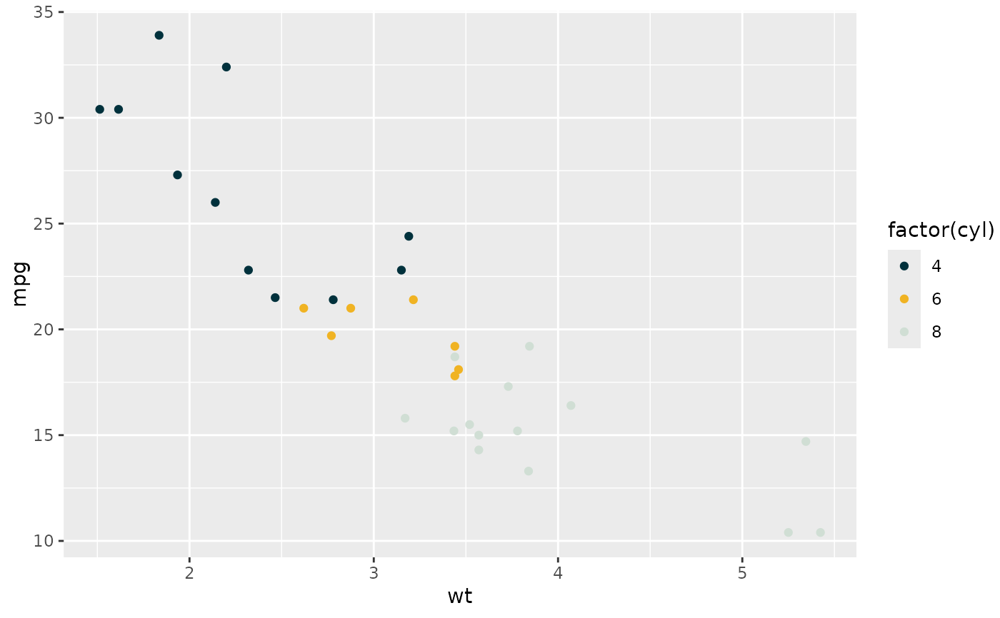
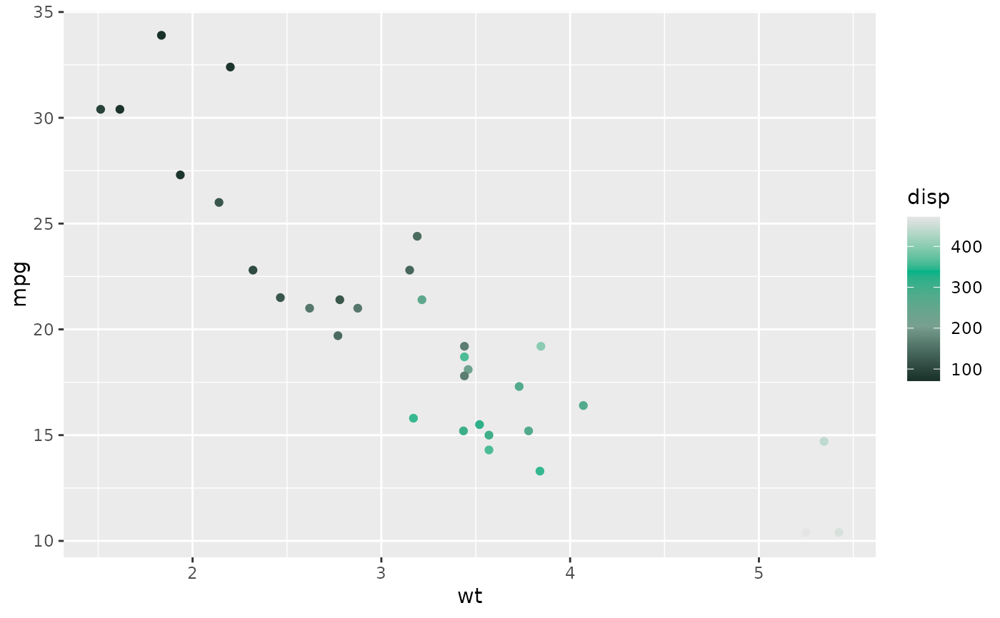

A comprehensive color system based on William & Mary's brand guidelines. The colors are organized into primary, secondary/tertiary, and neutral groups. See https://brand.wm.edu/index.php/university-colors/ for the original brand guidelines.
Colors
Colors are organized into groups:
Primary Colors:
Wren Twilight (
wren_twilight): Deep navy blue (#00313C)Vine (
vine): Rich burgundy (#84344E)Patina (
patina): Vibrant teal (#00B388)Spirit Gold (
spirit_gold): Bright gold (#F0B323)Silver (
silver): Light gray (#D0DED4)
Secondary & Tertiary Colors:
Colonial Yellow (
colonial_yellow): Muted gold (#CAB64B)College Sky (
college_sky): Light blue (#64CCC9)Weathered Brick (
weathered_brick): Coral red (#E56A54)Moss (
moss): Olive green (#789D4A)College Woods (
college_woods): Sage green (#789F90)Slate (
slate): Medium gray (#5B6770)Griffin Green (
griffin_green): Deep forest green (#183028)
Neutral Grays:
Gray 90-10: A range of grays from light to dark
NA Color (
na_color): Special gray for missing values
Palettes
Several pre-defined palettes are available:
Categorical Palettes:
default: Three primary colors (Wren Twilight, Spirit Gold, Silver)one_color: Single color (Wren Twilight)two_colors: Two colors (Wren Twilight, Spirit Gold)three_colors: Same as defaultfour_colors: Adds Patina to three_colorsfive_colors: Adds Vine to four_colors
Sequential Palettes:
sequential_green: Griffin Green to Gray90sequential_gold: Spirit Gold to Gray90
Diverging Palettes:
diverging_green_gold: Griffin Green to Spirit Golddiverging_vine_sky: Vine to College Sky
Examples
# Access individual colors
aiddata_colors$wren_twilight
#> Wren Twilight
#> "#00313C"
aiddata_colors$spirit_gold
#> Spirit Gold
#> "#F0B323"
# Use with ggplot2
library(ggplot2)
# Categorical data with default palette
ggplot(mtcars, aes(wt, mpg, color = factor(cyl))) +
geom_point() +
scale_color_aiddata()

# Sequential data
ggplot(mtcars, aes(wt, mpg, color = disp)) +
geom_point() +
scale_color_aiddata(palette = "sequential_green", discrete = FALSE)
